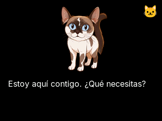

Estas 31 pantallas proceden del renderizador LVGL real del candidato 0.3.0. Los textos, sensores, disponibilidad y foto son datos de prueba. Esta vista permite revisar el diseño; todavía no confirma rendimiento, audio ni funcionamiento físico del CoreS3.

Principal · 320 × 240
Manifiesto y hashes · Gestos simulados en LVGL: 21 pruebas aprobadas. En el dispositivo: borde izquierdo abre menú o vuelve; derecho abre herramientas; superior abre preferencias; tocar el texto abre lectura; acariciar a Sagwa no activa el micrófono.
PrincipalMenúHerramientasPreferenciasModosAgentesDestinosTarea recienteSensoresVozMascotaEnrutamientoLectura ampliadaCancelarAutorizarCámaraPlugin de notasEnfoqueTelemetríaNocheCentinelaTerminalMultimediaAsistenteEntornoRecuperaciónEnfoque · listoEnfoque · activoEnfoque · pausaEnfoque · terminadoHistorial localClima · pronóstico vigenteClima · dato vencido